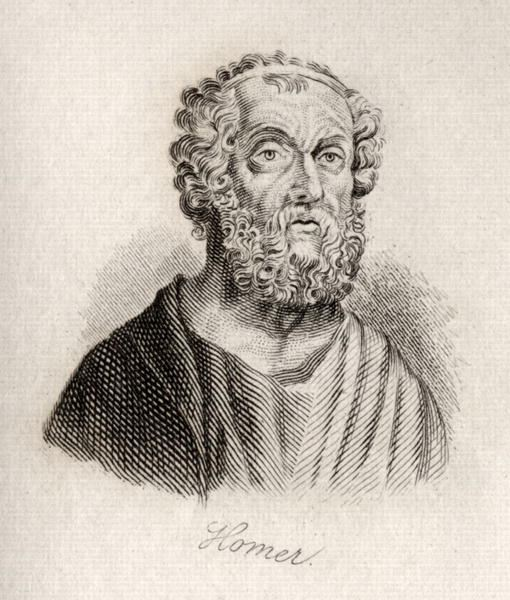
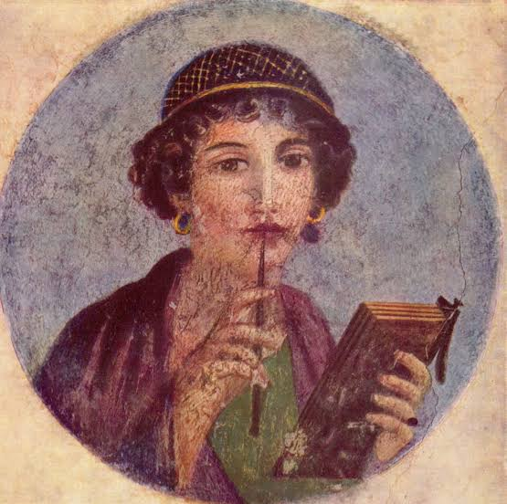

La literatura es una forma de expresión artística que utiliza el lenguaje para transmitir ideas , emociones y experiencias humanas. A lo largo de la historia, la literatura ha evolucionado y se ha diversificado en diferentes géneros y estilos, reflejando las culturas y sociedades en las que se desarrolla.
El origen de la literatura se remonta a las primeras civilizaciones humanas, donde la comunicación oral y escrita comenzó a desarrollarse. Las primeras formas de literatura incluían mitos, leyendas y poesía, que se transmitían de generación en generación.
El primer autor de literatura conocido es Homero, un poeta griego que vivió alrededor del siglo VIII a.C. Es famoso por sus épicas "La Ilíada" y "La Odisea", que han influido en la literatura occidental durante siglos.

La primera obra de literatura conocida es "La Ilíada", atribuida a Homero. Esta epopeya narra los eventos de la Guerra de Troya y es considerada una de las obras más importantes de la literatura antigua.
La primera autora de literatura conocida es Sappho, una poeta griega que vivió alrededor del siglo VI a.C. Es famosa por sus poemas líricos que exploran temas como el amor y la belleza.

La primera obra escrita por una mujer conocida es "Poemas de Sappho", que incluye una colección de poemas líricos que han sido preservados a lo largo del tiempo. Sus obras han influido en la poesía y la literatura posteriores.
VOLVER MENU